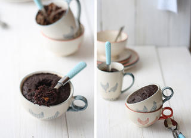
La semana pasada me ofrecieron la posibilidad de compartir una receta en la radio, en el espacio que I love aceite tiene los viernes en Cadena Ser Jaén. Podéis escuchar el audio pinchando en este enlace, y desde aquí quiero dar las gracias a Lola y a Fernando por darme la oportunidad de colaborar en este espacio.
Para esta ocasión, me apetecía elegir una receta que pudiese preparar cualquiera: sin conocimientos de cocina, sin moldes, sin báscula, y sin necesidad de ningún equipamiento especial. Así que elegí esta idea sencilla, rápida, y resultona: un bizcocho tipo brownie que se prepara en 5 minutos, y sin tener que encender el horno, ya que se hace en microondas. Es una variación de una receta que circula por internet desde hace tiempo… pero sinceramente creo que es una versión muy mejorada, al menos a mí la receta original me resultó muy seca incluso en caliente… y cuando se enfriaba directamente incomestible.
En cualquier caso, este bizcocho-brownie en taza de nutella y caramelo estará listo para comer en 5 minutos, preferiblemente caliente o templado, pero incluso frío está rico. Solo, o acompañado de helado de vainilla, natillas,… Os animáis a prepararlo?
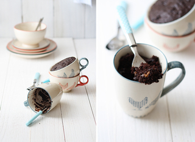
{Brownie en 5 minutos}
Descripción: Bizcocho de chocolate, nutella, y caramelo preparado en el microondas, listo en 5 minutos, estilo brownie
Preparación: 5 min
Cocción: 5 min
Raciones: 2
Valoración
Ingredientes
- 1 huevo
- 4 cucharadas soperas de harina
- 4 cucharas soperas de azúcar
- 3 cucharadas soperas de cacao en polvo
- 3 cucharadas soperas de nutella
- Una puntita (como un cuarto de cucharita de café) de levadura química, tipo Royal.
- 6 cucharadas soperas de leche
- 3 cucharadas soperas de aceite de oliva virgen extra
- 4 caramelos blandos, tipo toffee
Preparación
- Ponemos en un bol todos los ingredientes menos los caramelos y la cáscara del huevo, que nos conocemos. Mezclamos bien.
- Cogemos dos tazas grandes, repartimos la masa entre ambas.
- Colocamos un par de caramelos en cada taza, presionándolos para hundirlos en la masa.
- Ponemos una taza en el microondas, y programamos 1 minuto 45 segudos (a máxima potencia). Comprobamos que esté a nuestro gusto (más o menos hecho) y procedemos igual con la otra taza.
- Servimos idealmente caliente o templado, solo o acompañado de una bola de helado de vainilla, un poco de nata,…
Notas
Las medidas no se refieren a cucharas americanas, son cucharadas soperas. En el paso a paso podéis ver que las cucharadas son colmadas, salvo las de líquido como leche y aceite que por razones obvias tienen que ser rasas.
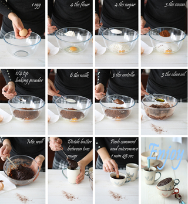
Last week I was given the chance to share a recipe on the radio, thanks to Fernando from I love aceite. This time I wanted to present a recipe anyone at home could prepare, that is why I chose this Nutella caramel brownie cake. It is so easy you will not need molds, kitchen scales, or any cooking experience… The problem? It is too good, and ready in 5 minutes!! Prepare this recipe at your own risk 
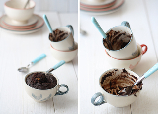
{Mug brownie in 5 minutes}
Summary: Chocolate, nutella and caramel brownie cake, ready in 5 minutes
Preparation time: 5 minute(s)
Cooking time: 5 minute(s)
Number of servings (yield): 2
Ingredients
- 1 egg
- 4 tablespoons all purpose flour
- 4 tablespoons sugar
- 3 tablespoons unsweetened cocoa powder
- 3 tablespoons nutella
- 1/4 teaspoon baking powder
- 6 tablespoons whole fat milk
- 3 tablespoons extra virgin olive oil
- 4 caramel candy squares
Directions
- In a medium bowl, mix all ingredients, excepting caramel candy squares
- Divide batter between two mugs
- Press caramel candy squares into the batter
- Microwave 1 cake mug for 1 minute, 45 seconds (set the microwave at maximum power)
- Serve hot or warm preferably, alone, or with a scoop o vanilla ice, whipped cream,…
Note
In this case the term “tablespoon” does not refer to the american metric system. I just used a common soup spoon to measure the quantitites, as shown on the images

 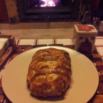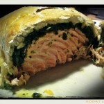
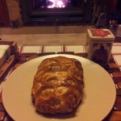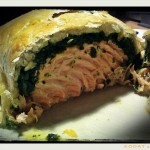
 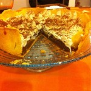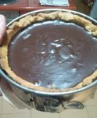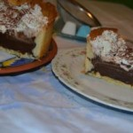
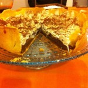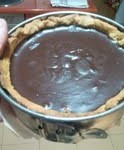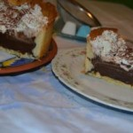
")


")